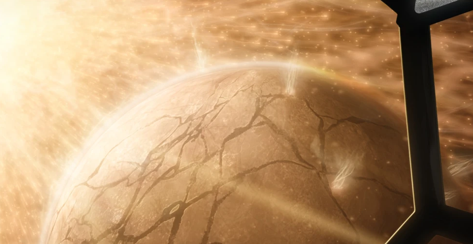
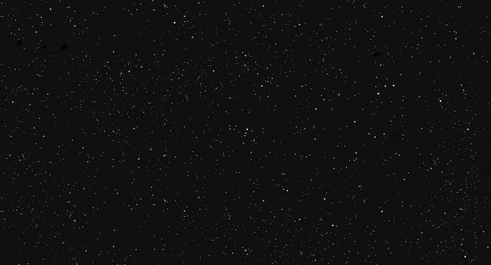

About The Force
"It's an energy field created by all living things. It surrounds us and penetrates us; it binds the galaxy together." Obi-Wan Kenobi. The Force is a major part of the Star Wars Universe. As Obi-Wan expalins, it binds the galaxy together, it is also what give the Jedi and Sith their abilites. The Force is more complicated than one may percieve it to be.

The Living Force
The Living Force is what passes through all living things. This is the type of Force that Force users use whenever they use the Force. It comes from the Cosmic Force, which we will discuss soon. Through a microscopic organism called, "Midichlorians", an organism found in all living things, is how Force users like Anakin and Luke Skywalker are able to communicate with and use the Force. There are many unique aspects of the Living Force. For example, since all living things are connected to the Force, some more than others, they all leave echoes of the past through the Force. Although, it does not occur purposfully, and there are few who are capable of picking up these, "Force Echoes."

The Cosmic Force
The Cosmic Force is often called the, "Wellspring" of the Force. For it is where the Living Force comes from, and is where the Living Force then feeds back into. All living things are eventually returned to the Cosmic Force, and through the Cosmic Force, something spectacular can happen. Qui-Gon Jinn discovered how to live even after death through the Cosmic Force, although both aspects of the Force are used. Through the Cosmic Force, a person well versed in the Force and with proper teachings can live on. It is not a technique all Force users know, (except Anakin, he's an exception I guess). In fact, since Qui-Gon Jinn was the first user to learn how to become a Force Ghost, all previous Jedi who died before knowledge of this technique was shared, are ineligible to become Force Ghosts.